| Star Clusters | ||||
| Globular Clusters | ||||
| 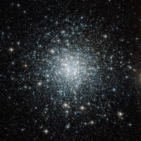 | 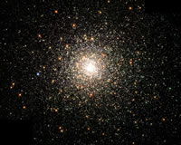 | 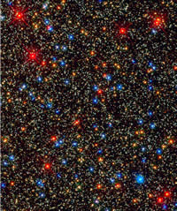 | 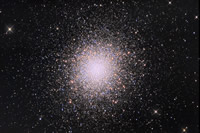 | 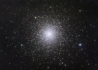 |
Orbiting outside large galaxies like our Milky Way, Globular clusters hold some of the oldest stars in our neighborhood. They lie between 15,000 and 150,000 light years away from us for those orbiting the Milky Way. They may be the remnant cores of dwarf galaxies that have been cannibalized by our own from billions of years of collisions. Containing anywhere from a 50,000 to over a million stars, these objects are in some ways, still a mystery. Inside the cluster, new blue stars called blue stragglers inhabit the slew of 10 million year old population II red stars. The newest theories to explain this tell us there must be star forming still occurring from the remnants of the dying stars in the cluster. In some clusters lie yellow hyper-giants and Wolf-Rayet stars; giant stars spewing solar wind at hundreds of thousands of miles per hour. Globular clusters have been seen around other large galaxies like the Andromeda galaxy and M81 showing us that they're not confined to our galaxy alone as seen in the picture below. The pictures above show a few examples of over 100 known globular clusters orbiting the Milky Way. The center image being an extreme zoom into the core of the Omega Centauri Cluster taken by the Hubble Space Telescope. Notice closely the color variation in the stars of the cluster showing the blue stragglers within. |
||||
| 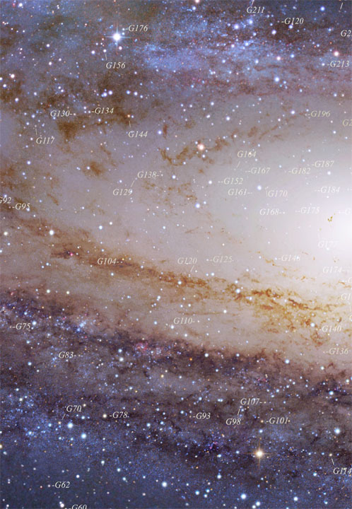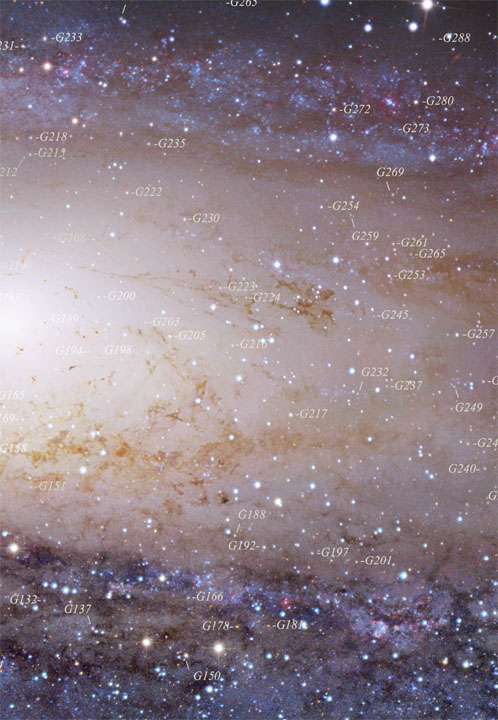 | ||||
| Open Clusters | ||||
| 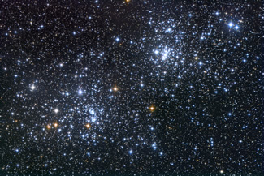 | 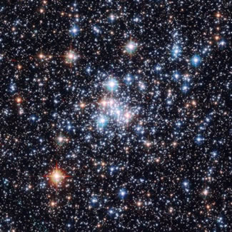 | 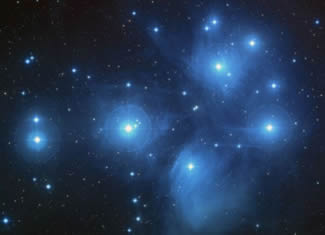 | ||
| 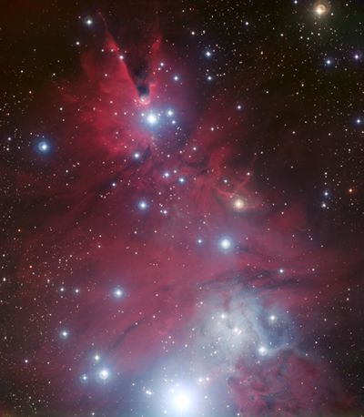 | 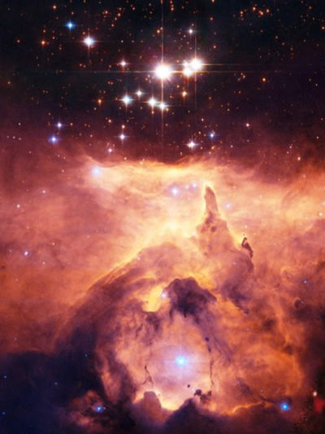 | |||
Most open clusters contain families of stars born from the same nebula. The two pictures show stars forming or formed from giant clouds of gas and dust in our galaxy. Open clusters can house 10s to 100s of stars formed there. Eventually as the galaxy spins around over millions of years, these stars will disperse through the galaxy much like our Sun and its siblings possibly have in the past. These sibling stars will also be the death of the nebulae surrounding them. The stellar winds from the stars will slowly push away the gas and dust into space leaving little behind as seen in the first few images. Other open clusters are nothing more than chance alignments of stars relative to us. Some being nothing more than appearing to be clustered and related when in fact, they're distant cousins at best. The video below shows some of the star forming regions as seen in another galaxy which will eventually disperse leaving an open cluster behind. |
||||